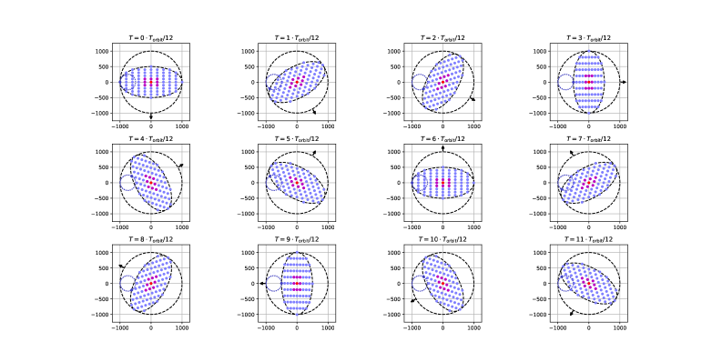
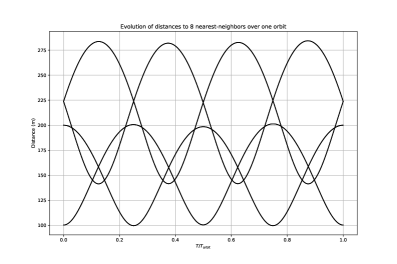

Fizyka orbitalna, orbity i operacje
Notatka raportu "Orbitalne centra danych". Kluczowe źródła: źródło 1, źródło 2.
W skrócie
Cała teza orbitalnych centrów danych stoi i upada na fizyce orbity: gdzie umieścisz satelitę, decyduje o tym, czy panele świecą prąd przez prawie całą dobę (a więc bez ciężkich i drogich baterii), jak szybko atmosfera ściąga sprzęt w dół oraz ile paliwa trzeba spalić, by utrzymać szyk konstelacji. Najwięksi gracze (SpaceX, Starcloud, Google Project Suncatcher, Thales/ASCEND) celują w orbity heliosynchroniczne typu dawn-dusk ("brzask-zmierzch"), gdzie nasłonecznienie sięga 🔵 ponad 99% czasu źródło - to fundament ekonomiki, bo eliminuje magazynowanie energii. Dla inwestora kluczowe: im wyżej (1000-1600 km), tym dłuższy czas życia orbity i mniej dragu, ale tym wyższy koszt startu (do 🔵 ~11 km/s delta-V dla 1600 km) źródło oraz dłuższa, kosztowna deorbitacja na koniec życia. Ryzyko nie jest fizyczne tylko inżynieryjno-skalowe: utrzymanie setek tysięcy platform w ciasnym szyku to, słowami branży, "nieustanna walka z dynamiką orbitalną", a montaż GW-skali budzi twarde wątpliwości kosztowe (potrzeba spadku poniżej 🟠 200 USD/kg) źródło. Tempo: pierwsze węzły już latają (Axiom, 11 stycznia 2026), prototypy Google planowane na 2027, pełne GW dopiero około 2050.
Spółki powiązane
Notowane spółki produkujące podzespoły/technologie związane z tym tematem. Pełne omówienie: spółki, dla których nisza to >=33% przychodów; skrótowe: zdywersyfikowane konglomeraty. Zob. też Słownik i Spółki z ekspozycją na giełdy europejskie.
Producenci kluczowi (>=33% przychodów z niszy - omówienie pełne):
- Rocket Lab Corporation (RKLB) - Launch (Electron/Neutron) + Space Systems: bus, ogniwa SolAero, komponenty
- Redwire Corporation (RDW) - Panele ROSA, struktury rozkładane, montaż on-orbit, radiatory Q-Rad
- Voyager Technologies, Inc. (VOYG) - Stacje kosmiczne (Starlab), systemy kosmiczne i obronne
- MDA Space Ltd. (MDA) - Robotyka kosmiczna (Canadarm), busy, anteny
Pozostali dominujący gracze (nisza to ułamek przychodów - omówienie skrótowe):
- Northrop Grumman Corporation (NOC) - Serwis GEO (MEV/MRV), busy, radiatory, ogniwa
- Airbus SE (AIR) 🇪🇺 - PV (Sparkwing), optyka (Tesat), busy, serwis (EU)
- RTX Corporation (RTX) - ADCS (Blue Canyon), termika (Collins Aerospace)
- Lockheed Martin Corporation (LMT) - Busy satelitarne, serwisowanie, ULA (launch)
Powiązane wątki
Mapa powiązań tematycznych - jak ten wątek łączy się z resztą raportu.
- Energetyka kosmiczna - wybór orbity (dawn-dusk vs LEO) decyduje o nasłonecznieniu 24/7
- Chłodzenie - orientacja platformy steruje celowaniem radiatorów w zimną przestrzeń
- Promieniowanie i elektronika - wysokość orbity wprost wyznacza roczną dawkę promieniowania
- Niezawodność i serwisowanie - deorbitacja, EOL i serwis to operacje cyklu życia platformy
- Regulacje i debris - zasada 5 lat na deorbit i ryzyko debris to ramy regulacyjne operacji
Trade-off orbit: LEO vs SSO dawn-dusk vs MEO vs GEO
Orbita to nie szczegół techniczny, lecz najważniejsza decyzja biznesowa całego projektu, bo determinuje koszt, opóźnienia i czas życia sprzętu. Najniższa warstwa to LEO (Low Earth Orbit, niska orbita okołoziemska), zwykle definiowana jako pas 🔴 160-2000 km nad powierzchnią Ziemi źródło. Satelita w LEO okrąża Ziemię raz na 🔴 ~90-120 minut źródło i daje bardzo niskie opóźnienie sygnału - 🔴 ~20 ms round-trip (czas przelotu sygnału tam i z powrotem) dla 300-600 km źródło. Dla porównania GEO (orbita geostacjonarna), położona 🔴 35786 km nad równikiem źródło, daje 🔴 ponad 500 ms round-trip, co dyskwalifikuje ją z aplikacji czasu rzeczywistego źródło. Implikacja dla inwestora: nikt poważny nie celuje w GEO do obliczeń AI - opóźnienie zabija użyteczność.
Szczególnym typem LEO jest orbita heliosynchroniczna (SSO, sun-synchronous orbit), a w jej ramach wariant dawn-dusk (zwany też terminator orbit - płaszczyzna orbity biegnie wzdłuż granicy dnia i nocy). To właśnie tutaj koncentruje się cała branża, bo daje niemal ciągłe nasłonecznienie. SpaceX w swoim wniosku do FCC deklaruje pracę 🔵 między 500 a 2000 km i inklinacje od 30 stopni do orbity heliosynchronicznej źródło, z konstelacją podzieloną na wąskie powłoki orbitalne o szerokości 🔵 do 50 km każda źródło. Starcloud proponuje SSO na 🔵 600-850 km źródło, Google Project Suncatcher modeluje klastry na 🔵 ~650 km źródło, a projekt akademicki Bargatina (tethered ODC, czyli centrum danych złożone z węzłów połączonych "uwięzią"/liną) lokuje się w orbicie DDSS (dawn-dusk sun-synchronous) na 🔵 ~1600 km przy inklinacji 102.5 stopnia źródło. ASCEND od Thales celuje w 🟠 ~1400 km, wybierając tę wysokość m.in. dla niskiego zagęszczenia śmieci kosmicznych źródło.
Gracze rozkładają się na wysokościach od ~650 km (Google) po ~1600 km (Bargatin) - wyżej oznacza mniej dragu i dłuższe życie aktywa, ale droższy start (delta-V ~11 km/s na 1600 km).
xychart-beta
title "Wysokosc orbity graczy ODC (km)"
x-axis ["Google", "Starcloud", "ASCEND", "Bargatin"]
y-axis "km" 0 --> 1600
bar [650, 725, 1400, 1600]
Rys. 12 - Wysokości orbit: Google Suncatcher ~650 km, Starcloud (środek pasma 600-850 km), ASCEND/Thales ~1400 km, Bargatin DDSS ~1600 km. Dane: ISCR arXiv 2604.07760; FCC DOC-419509A1; Hello Future / Orange - ASCEND; Bargatin et al. arXiv 2512.09044.
A MEO (Medium Earth Orbit, średnia orbita, 2000-35786 km)? Dla centrów danych jest po prostu gorszym wyborem niż LEO. Dokładne latency MEO dla ODC jest NIE UJAWNIONE w źródłach (proxy: MEO ma wyższe opóźnienie i wyższe koszty startu niż LEO); jak ujmuje to źródło, "dla zastosowań data center MEO oferuje niewiele zalet względem LEO - wyższa ekspozycja na promieniowanie, wyższe koszty startu i dłuższe opóźnienie komunikacji" 🔴 źródło. Implikacja dla inwestora: rynek de facto skonsolidował się wokół LEO/SSO; GEO i MEO to ślepe zaułki dla obliczeń.
Nasłonecznienie 24/7 na dawn-dusk vs cykle eklips w zwykłym LEO
Tutaj kryje się największa oszczędność całej koncepcji. W kosmosie panel słoneczny odbiera pełny strumień słoneczny AM0 o stałej słonecznej 🔵 ~1361 W/m2 (~1.36 kW/m2) źródło - znacznie więcej niż na Ziemi, bo bez atmosfery i chmur. Problem w tym, że w zwykłym LEO satelita wpada w cień Ziemi (eklipsę) przy każdym okrążeniu, co wymusza ciężkie i drogie baterie. Rozwiązaniem jest geometria: gdy kąt beta (kąt między płaszczyzną orbity a kierunkiem na Słońce) wynosi 🟠 90 stopni, czyli dla orbity dawn-dusk, "płaszczyzna orbity jest prostopadła do promieni Słońca i nie ma eklips, niezależnie od wysokości" źródło. Dodatkowo, jak pokazują symulacje akademickie, "jeśli wysokość wynosi 🔵 co najmniej 1060 km, okres eklipsy w ogóle nie występuje" źródło.
Liczby na ciągłe nasłonecznienie są zgodne między graczami. SpaceX deklaruje nasłonecznienie 🔵 do ponad 99% czasu dla wysokich orbit heliosynchronicznych źródło. Google Project Suncatcher zakłada 🔴 99% rocznej ekspozycji słonecznej w dawn-dusk SSO źródło. Projekt Bargatina argumentuje, że pozostając w świetle słonecznym przez 🔵 niemal 100% czasu, orbita DDSS na ~1600 km "eliminuje potrzebę magazynowania energii i unika cyklowania termicznego" źródło. Implikacja dla inwestora: brak baterii i brak cyklowania termicznego to ogromna oszczędność masy i wzrost niezawodności - to właśnie ta przewaga uzasadnia cały model biznesowy.
Niezależna analiza ekonomiczna McCalipa daje użyteczną skalę porównawczą całej hierarchii: terminator orbit 🟠 ~98%, zwykła SSO (nie terminator) 🟠 ~80%, a zwykłe LEO zaledwie 🟠 ~60% rocznego czasu w słońcu źródło. Dokładny ułamek czasu w cieniu dla zwykłego LEO 300-600 km jest NIE UJAWNIONY jako pojedyncza liczba (proxy: eklipsa zależy od kąta beta i potrafi trwać do ~35-40 min na orbitę) - jak opisuje źródło, satelita "spędza drugą połowę orbity po przeciwnej stronie Ziemi w cieniu" 🟠 źródło. Roczny capacity factor paneli w DDSS z uwzględnieniem strat też jest NIE UJAWNIONY jako twarda liczba (proxy: ~99% w idealnym DDSS) źródło.
Roczny czas paneli w słońcu rośnie wraz z typem orbity - i to różnica decydująca o tym, czy potrzeba baterii. Zwykłe LEO daje tylko ~60% (ciężkie baterie konieczne), a terminator orbit ~98% (baterie zbędne).
xychart-beta
title "Roczne naslonecznienie wg typu orbity (%)"
x-axis ["LEO", "SSO", "Terminator"]
y-axis "% czasu w sloncu" 0 --> 100
bar [60, 80, 98]
Rys. 13 - Roczny udział czasu w świetle słonecznym dla zwykłego LEO, zwykłej SSO i orbity terminatorowej (dawn-dusk). Dane: Andrew McCalip - space datacenters.
Opór atmosferyczny (drag), station-keeping, napęd i paliwo
Atmosfera nie kończy się ostro - na niskich orbitach jej resztki nieustannie hamują satelitę (drag, opór aerodynamiczny), ściągając go w dół. Skala jest dramatyczna: gęstość atmosfery na 200 km jest "niemal 🔵 milion razy wyższa niż na 800 km" źródło. Stąd twarda hierarchia czasów życia orbity bez aktywnego napędu: na 🔵 ~200 km satelita rozpada się (deorbituje) w ciągu tygodni źródło, na 🔵 ~300 km przeżyje może kilka miesięcy źródło, na 🔵 ~600 km może działać wiele lat źródło, a na 🔵 800-1000 km czas życia rozciąga się do kilku dekad źródło. Powyżej 🔵 1000 km drag staje się pomijalny względem innych zaburzeń (spłaszczenie Ziemi, grawitacja Słońca i Księżyca) źródło. Implikacja dla inwestora: wybór wysokości to wybór między tańszym startem (niżej) a dłuższym życiem aktywa i mniejszym zużyciem paliwa (wyżej) - to klasyczny trade-off CAPEX vs koszt operacyjny.
"Utrzymanie pozycji" (station-keeping) kosztuje paliwo, mierzone w delta-V (przyrost prędkości, m/s, jaki napęd musi dostarczyć rocznie). Praca dyplomowa Jonesa podaje budżety: kompensacja dragu w LEO 🔵 60-500 m/s/rok źródło, roczna korekta orbity 🔵 15-75 m/s źródło, formation flying (lot w szyku) 🔵 1-500 m/s źródło, unikanie kolizji 🔵 0.01-0.05 m/s źródło i deorbitacja na koniec życia 🔵 120-150 m/s źródło. Napęd to głównie silniki elektryczne: projekt ISCR planuje dwa silniki Halla Busek BHT-600 o ciągu 🔵 39 mN każdy do kompensacji dragu na wysokościach LEO źródło, SpaceX deklaruje "zwinny i wysoce niezawodny napęd elektryczny" do precyzyjnych manewrów 🔵 źródło, a Bargatin proponuje silnik jonowy do delikatnego "wyciągnięcia" łańcucha węzłów przy rozkładaniu 🔵 źródło. Koszt wejścia na wysoką orbitę jest realny: wyniesienie na 1600 km o dużej inklinacji wymaga delta-V 🔵 ~11 km/s źródło. Dokładny roczny budżet delta-V dla klastra Google Suncatcher (81 sat) jest NIE UJAWNIONY (proxy: ogólna klasa LEO drag negation 60-500 m/s/rok) źródło. Implikacja dla inwestora: paliwo to powracający koszt operacyjny, który na niskich orbitach może szybko zjeść marżę - dlatego wyższe, bezdragowe orbity są atrakcyjne mimo droższego startu.
Roczny budżet delta-V (a więc paliwa) zdominowany jest przez kompensację dragu i lot w szyku; deorbitacja EOL i korekta orbity są mniejsze, a unikanie kolizji wręcz pomijalne. To mapa, gdzie ucieka koszt operacyjny.
xychart-beta
title "Gorne budzety delta-V wg manewru (m/s)"
x-axis ["Drag", "Formacja", "Deorbit", "Korekta", "Kolizje"]
y-axis "m/s (gorny zakres)" 0 --> 500
bar [500, 500, 150, 75, 0.05]
Rys. 14 - Górne wartości budżetów delta-V: kompensacja dragu w LEO, lot w szyku, deorbitacja EOL, roczna korekta orbity, unikanie kolizji. Dane: Jones thesis (RMC).
Deorbitacja i koniec życia (EOL), zasada 5 lat
Regulator wymusza sprzątanie po sobie. FCC przyjęło zasadę, że stacje kosmiczne kończące misję w regionie LEO muszą dokonać utylizacji "tak szybko, jak to wykonalne, i nie później niż 🔵 pięć lat po zakończeniu misji" źródło. To znaczące zaostrzenie względem poprzedniej wytycznej NASA/IADC, która dopuszczała deorbitację w ciągu 🔵 25 lat źródło. Reguła została przyjęta 🔵 29 września 2022 źródło i obowiązuje dla nowych wniosków złożonych po 🔵 29 września 2024 źródło. Implikacja dla inwestora: każda konstelacja ODC musi planować (i finansować) deorbitację w 5 lat - to wbudowany koszt EOL, który podnosi budżet delta-V i wpływa na ekonomikę całego aktywa.
Gracze projektują zgodnie z tą zasadą. Bargatin zakłada operacyjny czas życia tethered ODC 🔵 ~5 lat, po czym węzeł "może być bezpiecznie deorbitowany" źródło; nawet bez sterowania wysoki współczynnik balistyczny (~2 m2/kg) płaskich węzłów sprawia, że powrót nastąpi 🔵 w ciągu około 30 lat nawet z 1600 km źródło. SpaceX deklaruje przewidywany operacyjny czas życia centrów danych 🔵 pięć lat (przy chłodzeniu radiacyjnym) źródło oraz niezawodność utrzymania orbity 🔵 ponad 99% na blisko dziesięciu tysiącach satelitów źródło. Dokładny czas deorbitacji Starcloud jest NIE UJAWNIONY (proxy: 5-letnia reguła FCC dla nowych satelitów LEO) źródło.
Formation flying / utrzymanie szyku konstelacji
Pojedynczy satelita to za mało na centrum danych - potrzebny jest szyk wielu platform lecących blisko siebie i wymieniających dane łączami optycznymi. Sztandarowy przykład to Google Project Suncatcher: 🔵 81 satelitów w formacji o promieniu 🔵 1 km źródło, modelowanych na 🟠 ~650 km, "rozstawionych setki metrów od siebie i stabilnych przy ograniczonym station-keeping" źródło. Inne źródła podają jeszcze ciaśniejszy rozstaw 🔴 100-200 m między sąsiednimi węzłami źródło. Google ocenia, że "skromne station-keeping powinno utrzymać klaster razem" 🟠 źródło, z planem startu 🟠 2 prototypów na początek 2027 źródło.

Rys. 15 - Google Suncatcher: konfiguracja klastra 81 satelitow na orbicie. Źródło: Google Research / arXiv 2511.19468, licencja: arXiv open access - do uzytku wlasnego.
#grafika #fizyka-orbitalna-orbity-i-operacje #Suncatcher #konstelacja

Rys. 16 - Google Suncatcher: dynamika formacji satelitow w klastrze. Źródło: Google Research / arXiv 2511.19468, licencja: arXiv open access - do uzytku wlasnego.
#grafika #fizyka-orbitalna-orbity-i-operacje #Suncatcher #formacja
Sercem szyku są łącza optyczne (laserowe). Google potwierdził w demonstratorze laboratoryjnym przepustowość 🔵 1.6 Tbps i wykonalność łączy ponad 1 Tbps przy separacji rzędu kilometra źródło, choć docelowo łącza międzysatelitarne potrzebują agregatu rzędu 🟠 10 Tbps na łącze źródło, podczas gdy najszybsze dostępne dziś komercyjnie łącza laserowe dają zaledwie 🟠 ~100 Gbps źródło. Implikacja dla inwestora: istnieje ~100-krotna luka między dostępną a docelową przepustowością - to ryzyko techniczne, ale i pole na wartość, jeśli ktoś je zamknie.
Skala konstelacji konkurentów jest oszałamiająca: Starcloud wnioskuje o 🔵 do 88000 satelitów jako rozproszone centrum danych źródło, a SpaceX o 🔵 do 1000000 satelitów źródło, oba operując w powłokach orbitalnych o szerokości 🔵 do 50 km źródło. Branża zwraca jednak uwagę, że formacja Suncatcher to konstelacja "ciaśniej upakowana niż cokolwiek, co kiedykolwiek latało" 🟠 źródło. Implikacja dla inwestora: dotychczasowe konstelacje (np. Starlink) lecą rzadko rozstawione; ciasny szyk to nowa, nieprzetestowana w skali klasa ryzyka operacyjnego.
Skala wnioskowanych konstelacji różni się o rzędy wielkości: od 81 satelitów Google Suncatcher (formacja zademonstrowana koncepcyjnie) po milion platform SpaceX. To pokazuje przepaść między tym, co dziś wiarygodne, a deklaracjami GW-skali.
xychart-beta
title "Skala konstelacji ODC (liczba satelitow)"
x-axis ["Google", "Starcloud", "SpaceX"]
y-axis "liczba satelitow" 0 --> 1000000
bar [81, 88000, 1000000]
Rys. 17 - Wnioskowana liczba satelitów: Google Suncatcher (81), Starcloud (88 000), SpaceX (1 000 000). Dane: ISCR arXiv 2604.07760; FCC DOC-419509A1; SpaceX Center / wniosek FCC.
Montaż on-orbit / in-space assembly vs wynoszenie gotowych modułów, ograniczenie fairingu
Największe ograniczenie startu to fairing - osłona ładunkowa rakiety, która limituje wymiary tego, co da się wynieść w całości. Falcon 9 ma fairing 🔵 5.2 m średnicy x 13.1 m wysokości źródło i ładowność 🔵 ~22800 kg na LEO źródło. Starship podnosi poprzeczkę: 🟠 9 m średnicy źródło, z rozszerzoną objętością do 🟠 22 m źródło i ładownością 🟠 100000-150000 kg na LEO w wersji wielokrotnego użytku źródło.
Są dwie strategie obejścia limitu fairingu. Pierwsza: wynieś składane, samorozwijalne moduły w jednym starcie. ISCR pokazuje skrajny przykład - pełny satelita obliczeniowy 🔵 16 MW (150 ton), złożony z siatki 20 m x 2200 m i 16000 paneli, mieści się w jednej ładowni Starship źródło, a rozwinięta tablica ma 🔵 2.2 km długości źródło. Druga strategia: montaż na orbicie (in-space assembly). NASA w programie ISAM stwierdza wprost, że zestaw zdolności montażowych pozwala "wynosić części osobno i łączyć je razem, przezwyciężając ograniczenia objętości fairingu" 🔵 źródło. Misja demonstracyjna OSAM-1/SPIDER używa ramienia robota 🟠 5 m źródło, montuje funkcjonalną antenę 🟠 3 m z siedmiu elementów źródło i wytwarza w kosmosie belkę kompozytową 🟠 10 m źródło. Europejski ASCEND/Thales stawia na montaż robotyczny w ramach demonstratora EROSS IOD, którego pierwsza demonstracja planowana jest 🔵 do 2026 źródło, z wdrożeniem pierwszego centrum danych 🟠 do 2036 źródło. Masa satelitów Google Suncatcher jest NIE UJAWNIONA (proxy: koncepcja 81 sat w klastrze 1 km) źródło, a masa Starcloud-1 poza modułem H100 jest NIE UJAWNIONA (proxy: cały satelita 60 kg, wielkości mini-lodówki) źródło. Implikacja dla inwestora: strategia "jeden start, samorozwijalny moduł" jest mniej ryzykowna niż montaż robotyczny GW-skali, który wciąż jest na etapie demonstratorów.
Skalowanie mocy do MW-GW: liczba modułów na 1 MW, gęstość upakowania
Tu konkretyzuje się pytanie "ile sprzętu na megawat". Bargatin podaje dwa warianty tethered ODC: mniejszy 🔵 ~2 MW wynoszony Falcon 9 i większy 🔵 ~20 MW dla Starship źródło. Pojedynczy węzeł to 🔵 ~10 kg masy generujący 🔵 ~2 kW mocy źródło, co daje 🔵 500 węzłów na 1 MW (proxy: 1 MW / 2 kW) źródło. ISCR liczy inaczej: satelita 🔵 16 MW ma 🔵 16000 paneli 1-kW źródło, czyli 🔵 1000 paneli na 1 MW (proxy: 16000 / 16) źródło, na łączną powierzchnię 🔵 45000 m2 źródło, co daje gęstość 🔵 ~2744 m2/MW (proxy: 45000 m2 / 16.4 MW) źródło. Specyficzna moc paneli ISCR sięga 🔵 506 W/kg, "ponad pięciokrotnie więcej niż typowe 100 W/kg istniejących satelitów" źródło, a specyficzna moc obliczeniowa 🔵 112.5 kW/ton źródło mieści się w celu SpaceX 🔵 100-150 kW/ton źródło. Implikacja dla inwestora: te liczby (W/kg, kW/ton) to właściwa "wydajność na koszt startu" - im wyższe, tym tańsza moc obliczeniowa w przeliczeniu na kilogram wyniesiony w kosmos.
W skali makro SpaceX twierdzi, że wynoszenie 🔵 1 mln ton/rok satelitów przy 🔵 100 kW mocy obliczeniowej na tonę dodawałoby 🔵 100 GW mocy AI rocznie źródło. ASCEND celuje w 🔵 1 GW przed 2050 źródło. Starcloud przedstawia wizję 🟠 5 GW "orbitalnego hiperklastra" zasilanego tablicą słoneczną o powierzchni 🟠 4 km2 źródło. Gęstość upakowania paneli w GW-skali dla Starcloud jest NIE UJAWNIONA jako twarda liczba (proxy: 4 km2 na 5 GW, czyli ~0.8 km2/GW) źródło. Implikacja dla inwestora: deklarowane GW są odległe (2050) i zależne od taniej, masowej rakiety (Starship) - krótkoterminowo liczy się raczej kilowatowo-megawatowa ścieżka.
Kontrowersje
Realizm dawn-dusk ~99% nasłonecznienia vs teza o 5-minutowych oknach
ZA wysokim nasłonecznieniem stoi spójny front liczb i fizyki: Google Suncatcher deklaruje 🔴 99% ekspozycji słonecznej w dawn-dusk SSO źródło, SpaceX 🔵 ponad 99% dla wysokich SSO źródło, Bargatin "niemal 100% czasu" bez eklips na DDSS ~1600 km źródło, a teoria potwierdza, że przy beta=90 stopni "nie ma eklips niezależnie od wysokości" 🟠 źródło oraz że powyżej 🔵 1060 km eklipsa nie występuje źródło.
PRZECIW: teza o "5-minutowych oknach" pojawia się w polskim artykule sceptycznym, lecz sama liczba 5 minut jest NIE UJAWNIONA w źródłach pierwotnych - to roszczenie bez potwierdzenia. Uzasadniony zarzut ostrożnościowy brzmi jednak inaczej: dawn-dusk SSO nie eliminuje cienia dla każdej konfiguracji - w niskim LEO (<600 km) i przy odchyleniu od idealnego beta=90 stopni eklipsy nadal występują, a "nawet niewielki wzrost wysokości może drastycznie wydłużyć czas życia orbity" 🔵 źródło. W typowym LEO 300-600 km satelita "spędza połowę orbity po przeciwnej stronie Ziemi w cieniu" 🟠 źródło. Wniosek: ~99% jest realne, ale tylko dla starannie dobranej, wysokiej dawn-dusk SSO - nie dla dowolnego LEO. Konkretna liczba "5 minut" pozostaje niepotwierdzona.
Wykonalność formation-flying setek/platform w dekadę
ZA: Google modeluje 🔵 81 sat w klastrze 1 km źródło z konkluzją, że "skromne station-keeping powinno utrzymać klaster" 🟠 źródło; SpaceX planuje 🔵 1 mln satelitów źródło, Starcloud 🔵 88000 źródło.
PRZECIW: branża ostrzega, że nawet formacja Suncatcher to coś "ciaśniej upakowanego niż cokolwiek, co kiedykolwiek latało" 🟠 źródło, a lot w tak ciasnym szyku to "nieustanna walka z dynamiką orbitalną, w tym drobnymi lecz uporczywymi siłami aerodynamicznymi i zaburzeniami pola grawitacyjnego Ziemi i Słońca" 🟠 źródło. Sam Altman (OpenAI) nazwał traktowanie orbity jako obejścia "śmiesznym", a orbitalne centra danych określono jako "wiele lat, być może dekad, oddalone" 🟠 źródło. Matt Garman (AWS) dodaje wprost: "nie ma jeszcze dość rakiet, by wynieść milion satelitów, jesteśmy od tego dalecy" 🟠 źródło. Wniosek: 81 sat w dekadę jest wiarygodne, ale skok do dziesiątków tysięcy czy miliona platform napotyka na ograniczenie liczby startów i nieprzetestowaną dynamikę ciasnego szyku.
Czy montaż orbitalny GW-skali jest realny
ZA: ASCEND deklaruje 🔵 1 GW do 2050 z montażem robotycznym EROSS IOD źródło; ISCR pokazuje, że 🔵 16 MW da się wynieść w jednym starcie Starship bez montażu źródło; NASA ISAM/OSAM-1 demonstruje montaż anteny 🟠 3 m i belki 10 m źródło oraz deklaruje "przezwyciężanie ograniczeń objętości fairingu" 🔵 źródło.
PRZECIW: krytyka FT wskazuje, że wymiana sprzętu na orbicie "wymaga albo zaawansowanego serwisowania w kosmosie, albo akceptacji degradacji wydajności i uwięzionego kapitału, który staje się śmieciem orbitalnym" 🟠 źródło. Ekonomiczna wykonalność wymagałaby spadku kosztów poniżej 🟠 200 USD/kg, czyli "siedmiokrotnej redukcji względem obecnych poziomów" źródło. Praca Saarland University (cytowana w FT) ostrzega, że systemy orbitalne "ponoszą znacząco wyższe koszty węglowe - do rzędu wielkości więcej niż odpowiedniki naziemne" 🟠 źródło. Rosyjska prasa branżowa cytuje opinie, że schłodzenie farmy serwerów w próżni wymagałoby gigantycznych radiatorów, a to "biliony dolarów i dekady badań" 🔴 źródło. Wniosek: pojedynczy samorozwijalny moduł MW-skali jest wiarygodny dziś; montaż robotyczny GW-skali pozostaje koncepcją zależną od radykalnego spadku kosztów startu i niedowiedzionego serwisowania na orbicie.
Słowniczek pojęć
- LEO (Low Earth Orbit) - niska orbita okołoziemska (ok. 160-2000 km), najbliżej Ziemi, daje najniższe opóźnienie i najtańszy start.
- SSO (orbita heliosynchroniczna) - orbita, której płaszczyzna utrzymuje stały kąt względem Słońca, dzięki czemu satelita przelatuje nad danym miejscem zawsze o tej samej porze.
- dawn-dusk (brzask-zmierzch) - wariant SSO biegnący wzdłuż granicy dnia i nocy, gdzie panele są oświetlone niemal cały czas i nie potrzeba baterii.
- MEO (Medium Earth Orbit) - średnia orbita (2000-35786 km), dla centrów danych gorsza od LEO: wyższe promieniowanie, droższy start i większe opóźnienie.
- GEO (orbita geostacjonarna) - orbita 35786 km nad równikiem, gdzie satelita "wisi" nad jednym punktem, ale opóźnienie ponad 500 ms dyskwalifikuje ją z obliczeń w czasie rzeczywistym.
- drag (opór atmosferyczny) - hamowanie satelity przez resztki atmosfery na niskich orbitach, które stopniowo ściąga go w dół.
- station-keeping (utrzymanie pozycji) - ciągłe korygowanie orbity napędem, by satelita pozostał na zadanej wysokości i pozycji.
- delta-V - przyrost prędkości (m/s), jaki napęd musi dostarczyć na dany manewr; miara zużycia paliwa i kosztu operacyjnego.
- deorbitacja - kontrolowane sprowadzenie satelity z orbity na koniec misji, by spłonął w atmosferze i nie został śmieciem kosmicznym.
- EOL (koniec życia) - moment zakończenia misji satelity, po którym regulator (FCC) wymaga deorbitacji w ciągu 5 lat.
- formation flying (lot w szyku) - utrzymywanie wielu satelitów blisko siebie w stabilnej formacji, by działały jak jedno centrum danych połączone łączami optycznymi.
- eklipsa - przejście satelity przez cień Ziemi, gdy panele tracą światło; na orbitach dawn-dusk praktycznie nie występuje.
- kąt beta - kąt między płaszczyzną orbity a kierunkiem na Słońce; przy 90 stopniach (dawn-dusk) orbita nie ma eklips niezależnie od wysokości.
- fairing - osłona ładunkowa na szczycie rakiety, która limituje wymiary tego, co da się wynieść w jednym starcie.
- in-space assembly (montaż na orbicie) - składanie dużej konstrukcji z osobno wyniesionych części już w kosmosie, by obejść ograniczenie fairingu.
- AM0 - widmo światła słonecznego w kosmosie (poza atmosferą), o stałej słonecznej ok. 1361 W/m2, mocniejsze niż na powierzchni Ziemi.
- napęd elektryczny (silnik Halla, silnik jonowy) - silnik o małym ciągu, ale dużej oszczędności paliwa, używany do kompensacji dragu i precyzyjnych manewrów.
Linkują tutaj
19 powiązanych notatek
- Mapa raportu Orbitalne / kosmiczne centra danych
- Sekcja Wprowadzenie, definicje i architektury
- Sekcja Weryfikacja tez sceptycznego artykułu
- Sekcja Energetyka kosmiczna i fotowoltaika orbitalna
- Sekcja Chłodzenie i radiacyjne odprowadzanie ciepła
- Sekcja Promieniowanie i elektronika rad-hard vs COTS
- Sekcja Niezawodność, serwisowanie i cykl życia sprzętu
- Sekcja Ekonomika i koszty całkowite (TCO)
- Sekcja Regulacje, prawo kosmiczne, debris i ITU
- Sekcja Zrównoważony rozwój i środowisko
- Sekcja Bezpieczeństwo, geopolityka i realizm 10-letni
- Spółka Airbus (AIR)
- Spółka Lockheed Martin (LMT)
- Spółka MDA Space (MDA)
- Spółka Northrop Grumman (NOC)
- Spółka Redwire (RDW)
- Spółka Rocket Lab (RKLB)
- Spółka RTX (RTX)
- Spółka Voyager Technologies (VOYG)